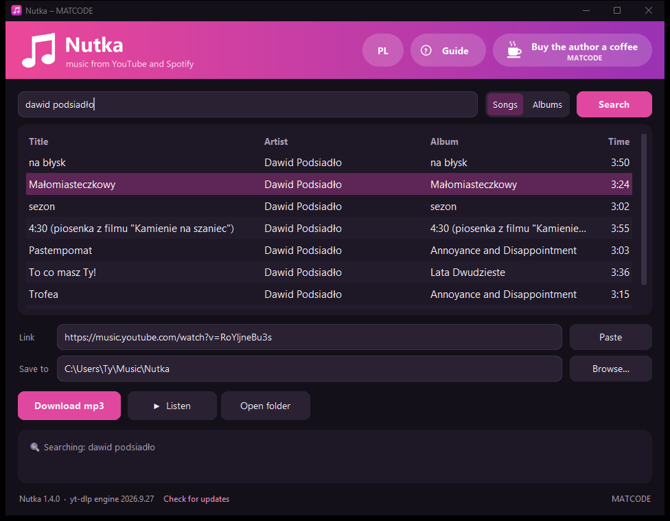
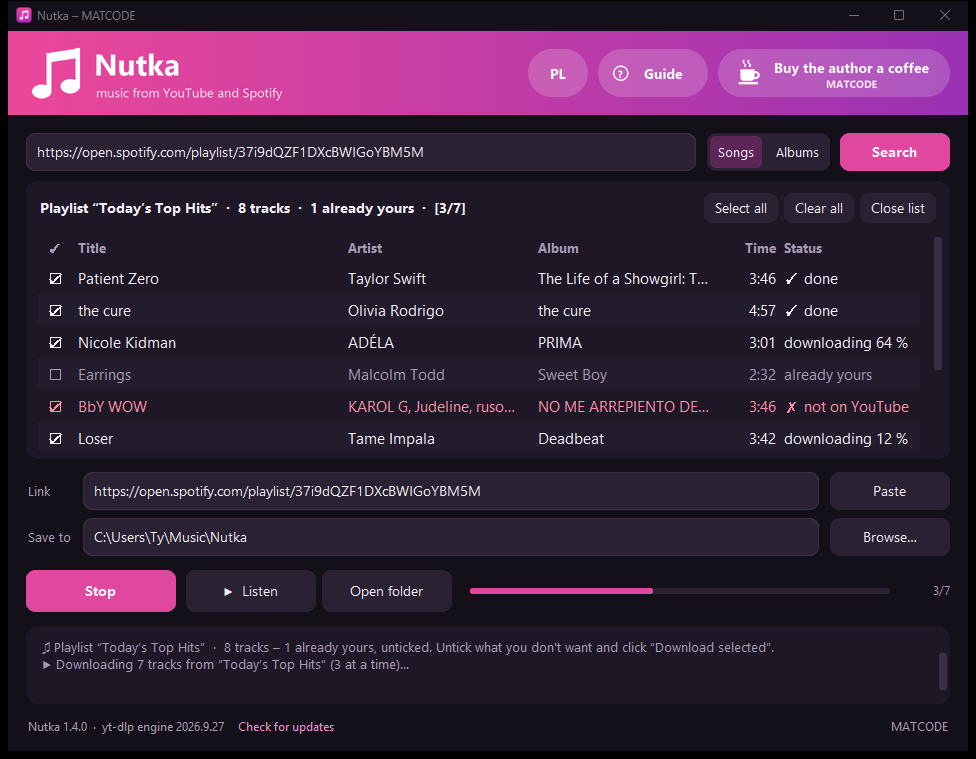

Type a title. Get an mp3 on your own computer.
Nutka searches YouTube Music, lets you listen first and saves the track as an mp3 with cover art and tags. It also downloads whole albums and playlists from Spotify. No account, no ads, nothing about you is sent anywhere.
Version 1.4.0 · Windows 10 and 11, 64-bit · free, MIT license · Polish and English
- na błyskDawid Podsiadło · na błysk
- MałomiasteczkowyDawid Podsiadło · Małomiasteczkowy
- sezonDawid Podsiadło · sezon
Three steps
No account, no settings, nothing to learn.
-
Type or paste
A title, an artist, or a link to a track, album or playlist on YouTube or Spotify. Results come from YouTube Music, so they land on the official versions.
-
Listen
Select a result and click Listen. An album plays track by track, and clicking another result switches straight away.
-
Download the mp3
Double-click a result or click Download mp3. With a Spotify playlist, untick what you don't want and click Download selected.
What it does
- YouTube Music search
- Type an artist or a title. The “Albums” switch shows whole records, which you download with one click.
- Listen before you download
- Play a track or a whole album in order before anything lands on your disk.
- Spotify playlists and albums
- Paste a playlist or album link. You get the track list with tick boxes, and Nutka downloads the ticked ones three at a time.
- Picks up only what's new
- Load the same playlist a week later. What you already have is unticked, so you download only the new tracks.
- Tidy files
- mp3 at roughly 250–270 kbps with cover art and tags: title, artist, album, track number, year. Albums and playlists go into their own folders.
- Keeps itself up to date
- The download engine refreshes quietly, because YouTube changes its site now and then. A new version of the app is installed only when it is signed with the author's key.
What it looks like
Search box on top, results in the middle, buttons and short messages at the bottom. With a Spotify playlist every track shows its own status.


Privacy
A music app doesn't need to know who you are. Nutka has no account, no telemetry and no ads.
- Your files stay with you
- mp3 files go to the folder you choose, settings live on your disk. After uninstalling, the app is gone entirely and the music stays.
- What it connects to
- YouTube for results and audio. Spotify for public playlist data: titles, artists, cover art; nothing is decrypted. PyPI every 6 hours for a newer download engine, with a checksum. GitHub to check for a new version.
- Open source
- The code is public under the MIT license. Anyone can check what the app does and build it themselves.
- Signed releases
- An update is installed only when the release is signed with the author's key built into the app. A GitHub account alone is not enough.
Nutka is a tool for private use. Download for yourself and don't distribute the files.
Before you download
| System | Windows 10 or 11, 64-bit |
|---|---|
| Disk space | about 400 MB (the installer is 118 MB) |
| Internet | for searching and downloading; the guide works offline too |
| Permissions | installs without administrator rights, in your user folder |
| Language | follows your Windows language (Polish or English); switch anytime with the EN / PL button in the top-right corner |
Windows will warn you on first install (“Windows protected your PC”), because the installer has no paid publisher certificate. Click More info, then Run anyway. The installation needs no administrator rights and asks no questions.
A problem or an idea? Write on GitHub.